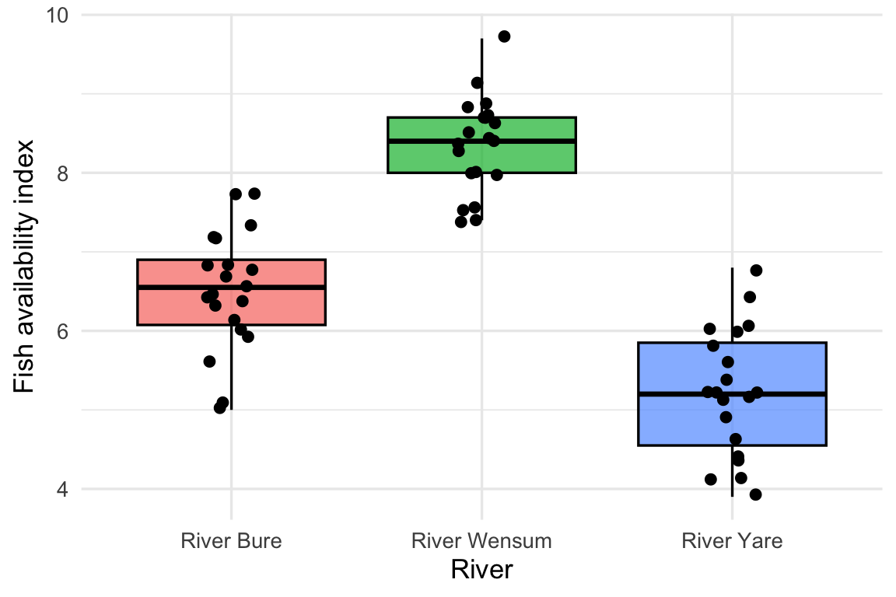
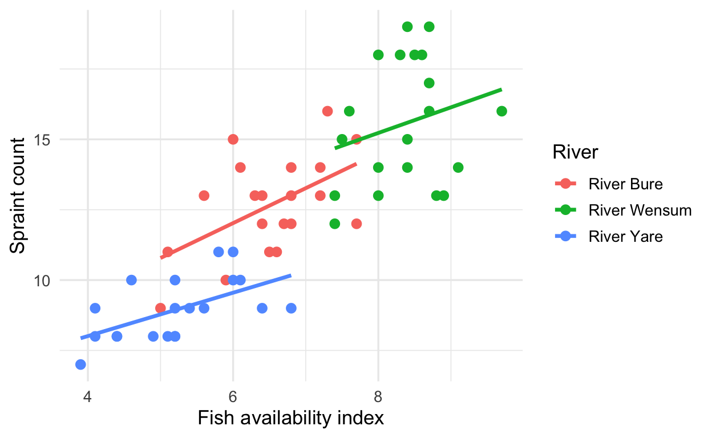
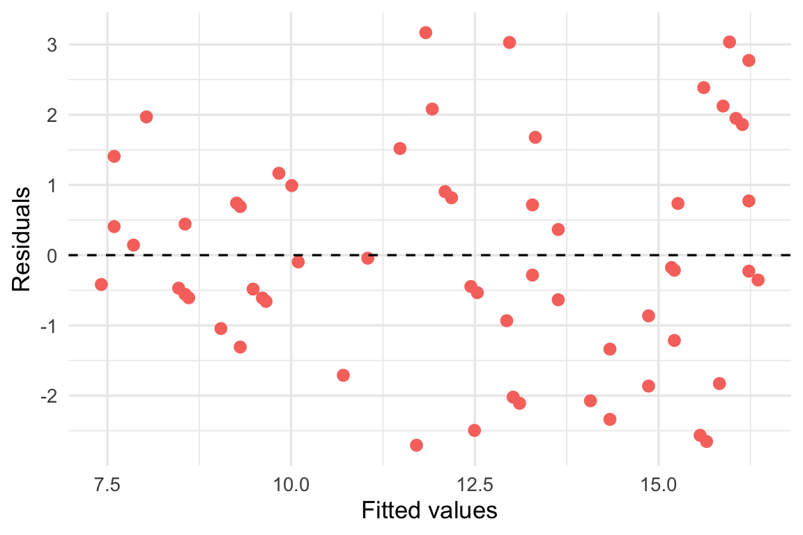

library(webexercises)
library(tidyverse)
otter_data <- read_csv("data/otter_data_v2.csv")8 Workshop 8 - Multivariate Linear Models
8.1 Multiple Linear Regression
So far, our linear models have had one predictor (independent variable) and one dependent variable. In Workshop 5, for example, we used fish availability to predict spraint count. But most outcomes in biology have more than one influence. Spraint count might depend on fish availability, but also on body length, the season or the river.
Multiple linear regression extends the linear model to two or more predictors used together to explain a single dependent variable. The process is very similar to the regression you already know. We fit the model with lm(), read a coefficients table, and check R² and the F-statistic. The main new idea is how to read each slope.
By the end of this section you will be able to:
- Write the equation for a model with more than one predictor
- fit a multiple regression in R and read the output
- explain what it means for a slope to be estimated holding the other predictors constant
- explain why a predictor can add very little to a model
8.1.1 Packages and data
Today you will need the package tidyverse. It is a new workspace, so please install it from the console using install.packages() before loading it into your script with library().
We will use the otter data again, so please read in otter_data_v3.csv from the data folder and call it otter_data.
library(tidyverse)
otter_data <- read_csv("data/otter_data_v2.csv")
Note
In Posit Cloud, packages need to be reinstalled each time you start a new session. If you use RStudio Desktop or Positron, you only install them once, but you still load them each session with library().
8.1.2 A quick recap
In a simple linear regression of spraint count on fish index, what does the slope tell us?
8.1.2.1 Step 1: The equation you already know
In Workshop 5 we described the relationship between fish index and spraints with a straight line:
\text{spraints} = a + b \times \text{fish index}
Fitting this to the otter data gives:
\text{spraints} = 0.25 + 1.81 \times \text{fish index}
- The intercept, 0.25, is the predicted spraint count when fish index is 0.
- The slope, 1.81, is how much the predicted spraint count increases for each 1 unit increase in fish index.
Read it as a recipe. Start at 0.25 spraints, then add 1.81 more for every 1 unit of fish index.
8.1.2.2 Step 2: Add a second predictor
Now suppose we also think body length might matter. We do not change the recipe, we just add one more ingredient: another slope multiplied by the new predictor.
\text{spraints} = a + b_1 \times \text{fish index} + b_2 \times \text{body length}
The only changes are that the slope b is now called b_1, and there is a new term for body length with its own slope, b_2. The numbering just tells the slopes apart.
Fitting this to the otter data gives:
\text{spraints} = -1.24 + 1.84 \times \text{fish index} + 0.012 \times \text{body length}
8.1.2.3 Step 3: Use it to make a prediction
For an otter with a fish index of 7 and a body length of 105 cm:
-1.24 + (1.84 \times 7) + (0.012 \times 105) \approx 12.9 \text{ spraints}
What does the 0.012 tell us?
8.1.2.4 Step 4: Add as many predictors as you like
The pattern never changes. Each extra predictor adds one more slope multiplied by that predictor. Written in general, with x_1, x_2 and so on standing for the predictors, it looks like this:
y = a + b_1x_1 + b_2x_2 + b_3x_3 + \dots
Where y is the dependent variable, a is the intercept, and each b is the slope for the predictor next to it. For our otter model, y is spraints, x_1 is fish index and x_2 is body length, so it is the same equation as in Step 2.
Note
Each slope is the effect of that predictor while holding the other predictors constant. In Step 2, b_1 is the effect of fish index among otters of the same body length.
8.1.2.5 Step 5: Fit the model in R
Tip
Remember, you can use functions such as col_names to see the names of the variables in your data frame.
To add a second predictor, join it to the first with + on the right of the ~. Complete the code below.
The dependent variable is:
The two predictors are: and
lm_multiple <- lm(___ ~ ___ + ___, data = otter_data)
summary(lm_multiple)lm_multiple <- lm(spraints ~ fish_index + length_cm, data = otter_data)
summary(lm_multiple)
Call:
lm(formula = spraints ~ fish_index + length_cm, data = otter_data)
Residuals:
Min 1Q Median 3Q Max
-3.5841 -1.1611 -0.2729 1.1137 3.8368
Coefficients:
Estimate Std. Error t value Pr(>|t|)
(Intercept) -1.24261 2.58360 -0.481 0.632
fish_index 1.83979 0.16586 11.093 7.34e-16 ***
length_cm 0.01240 0.01945 0.638 0.526
---
Signif. codes: 0 '***' 0.001 '**' 0.01 '*' 0.05 '.' 0.1 ' ' 1
Residual standard error: 1.825 on 57 degrees of freedom
Multiple R-squared: 0.692, Adjusted R-squared: 0.6812
F-statistic: 64.04 on 2 and 57 DF, p-value: 2.645e-158.1.2.6 Step 6: Read the output
The output looks like the simple regression output, with one row for each predictor in the coefficients table.
| Part of the output | What it tells us here |
|---|---|
(Intercept) |
The predicted spraint count when both predictors are 0, the starting point of the equation |
fish_index |
1.84 more spraints per unit of fish index, with body length held constant (p < 0.001) |
length_cm |
0.012 more spraints per cm of body length, with fish index held constant (p = 0.526) |
Multiple R-squared |
The proportion of variation explained by both predictors together (0.692) |
F-statistic |
Tests whether the predictors together explain a significant amount of variation (p < 0.001) |
The output looks like the simple regression output, with one row for each predictor in the coefficients table.
| Part of the output | What it tells us here |
|---|---|
(Intercept) |
The predicted spraint count when both predictors are 0, the starting point of the equation |
fish_index |
1.84 more spraints per unit of fish index, with body length held constant (p < 0.001) |
length_cm |
0.012 more spraints per cm of body length, with fish index held constant (p = 0.526) |
Multiple R-squared |
The proportion of variation explained by both predictors together (0.692) |
F-statistic |
Tests whether the predictors together explain a significant amount of variation (p < 0.001) |
What do the p-values in the coefficients table tell us?
8.1.2.7 Step 7: Why did body length add so little?
Compare the model with fish index on its own to the model with both predictors:
| Model | Slope for fish index | R² |
|---|---|---|
| Fish index only | 1.81 | 0.690 |
| Fish index and body length | 1.84 | 0.692 |
The fish index slope hardly changes, and R² barely rises. This is because of how the predictors share out the variance in spraint count:
- Each predictor may explain a unique part of the variance, which no other predictor explains.
- Predictors may also share some of the variance they explain, because they are related to each other and carry some of the same information.
Here, body length explains almost nothing that fish index does not already explain, so its unique part is tiny. It is also only weakly related to fish index, so there is very little shared variance either.
Adding body length changed R² from 0.690 to 0.692. What does this tell us?
Note
When predictors share a lot of variance
If two predictors are strongly related to each other, much of what each explains is the same information. Their slopes can then change a lot when both are in the model, and become unstable. This is called multicollinearity.
Note
Adjusted R²
R² can only go up when you add a predictor, even a useless one. Adjusted R² corrects for this by penalising each extra predictor. Here it goes down slightly, from 0.684 to 0.681, which also suggests body length is not improving the model. Use adjusted R² when comparing models with different numbers of predictors.
8.1.2.8 Some terms you will meet
Several of these terms are used for the same thing, so here is what each one means.
| Term | Meaning |
|---|---|
| Dependent variable | The outcome we are trying to explain (also called the response variable). In our model, spraint count. |
| Predictor | A variable used to explain the dependent variable (also called an independent or explanatory variable). Fish index and body length. |
| Covariate | A predictor included to account for its effect, usually while we focus on a different predictor. |
| Fixed effect | A predictor whose effect we estimate directly, with its own slope or group difference. |
| Random effect | A grouping variable whose levels are a sample from a larger set, included to account for non independence, not to estimate each level. |
Covariates:
Suppose our question is whether fish availability predicts spraint count, but we know larger otters might leave more spraints. We add body length to the model so that the fish index slope is estimated among otters of the same size. Body length is then a covariate. The model is the same as before, and only the role of the variable has changed.
Fixed effects:
Every predictor in the models we have fitted so far is a fixed effect. Each one gets its own estimate, such as a slope of 1.84 for fish index, and we interpret that estimate directly. Fixed effects can be continuous predictors, like fish index, or categories, like sex or site, where the estimate is the difference between groups.
Random effects:
Sometimes the data contain groups that are not of interest in themselves. If every otter in a survey were measured several times, measurements from the same otter would be similar to each other, so they would not be independent. Rather than estimating a separate effect for each otter, we treat otter_id as a random effect. This accounts for the clustering by estimating how much otters vary overall. Random effects need a different function from lm(), and models that contain both fixed and random effects are called mixed effects models. We do not fit them here, but you will meet them in later work.
In our model, we mainly care whether fish index predicts spraint count, and we add body length only to account for otter size. What is body length?
Which of these situations would call for a random effect?
Note
The lm() function can only fit fixed effects. This is why the models in this workshop contain no random effects, and why the otter data are not suitable for one: each otter appears in the data only once.
8.2 Case Study: What Drives Spraint Counts?
In Workshop 5 we found that fish availability is a strong predictor of spraint count. But the otters in our data were surveyed across three rivers and in two seasons, and these might also influence spraint counts. They could even be tangled up with fish availability itself, if some rivers simply have more fish.
Our question: does fish availability still predict spraint count after accounting for river and season?
In this model, spraint count is the dependent variable, fish index is the predictor we care about, and river and season are covariates included to account for their effects. All three are fixed effects.
8.2.1 Step 1: Check the data
Can you remember how to check the variable type of our variables? You can use the Function Glossary to remind yourself of this.
You should be able to see if you ran one of the checking functions that site, season and sex are currently characters (<chr>), which means R treats them as plain text. As we did in Workshop 4, we convert them to factors before modelling. A factor is a categorical variable with a fixed set of levels, and the order of those levels decides which one the model uses as the reference.
Tip
Task: Use mutate() to convert site, season and sex to factors in otter_data, then use count() to check how many otters there are in each site and season. Label this as a new object, and call it otter_data_v2
As this one is a bit new; I’ve hidden the code below - but do attempt to do it first!
otter_data_v2 <- otter_data %>%
mutate(
site = as.factor(site),
season = as.factor(season),
sex = as.factor(sex)
)
otter_data_v2 %>%
count(site, season)The data should now like this, notice how it now says “fct” and not “chr”?
otter_data_v2# A tibble: 60 × 11
otter_id site season sex age_class length_cm mass_kg spraints fish_index
<chr> <fct> <fct> <fct> <chr> <dbl> <dbl> <dbl> <dbl>
1 OT001 River … summer male sub_adult 120. 11.3 13 6.3
2 OT002 River … summer male sub_adult 128. 10.4 14 6.1
3 OT003 River … summer male juvenile 117. 7.2 11 5.1
4 OT004 River … summer fema… juvenile 88.6 5.23 15 7.7
5 OT005 River … summer male adult 111. 9.63 13 5.6
6 OT006 River … summer male sub_adult 110. 9.15 15 6
7 OT007 River … summer male adult 122. 8.03 12 6.7
8 OT008 River … summer male juvenile 121. 9.71 13 6.4
9 OT009 River … summer male adult 111. 10.8 12 6.8
10 OT010 River … summer male sub_adult 110. 10.2 16 7.3
# ℹ 50 more rows
# ℹ 2 more variables: tick_count <dbl>, log_tick_count <dbl>8.2.2 Step 2: Visualise the relationships
Remembering what we learnt last week, what plot do you think we could use for this?
Fish index is continuous and river is categorical, so a boxplot compares the centre and spread of fish index across the rivers. This is the same reasoning as Challenge 3 in the visualisation workshop.
Tip
Task: Code the relevant plot to see if fish index differs between rivers. Remember, the Function Glossary is there to help you!

What does the plot suggest about fish index and river?
Why does this matter for our question?
Tip
Task: Code the relevant plot spraints against fish index, coloured by river, with a separate points and line for each river. Use the Function Glossary to help you.

Within each river the lines slope upwards, but each river also sits at a different height. Rivers with more fish also tend to have more spraints.
8.2.3 Step 3: Start with the simple model
Tip
Task: Fit a simple regression of spraints on fish_index and save it as lm_simple. Then look at the summary().
summary(lm_simple)
Call:
lm(formula = spraints ~ fish_index, data = otter_data)
Residuals:
Min 1Q Median 3Q Max
-3.5767 -1.2375 -0.2637 1.3212 3.8737
Coefficients:
Estimate Std. Error t value Pr(>|t|)
(Intercept) 0.2483 1.0938 0.227 0.821
fish_index 1.8130 0.1596 11.358 2.25e-16 ***
---
Signif. codes: 0 '***' 0.001 '**' 0.01 '*' 0.05 '.' 0.1 ' ' 1
Residual standard error: 1.815 on 58 degrees of freedom
Multiple R-squared: 0.6898, Adjusted R-squared: 0.6845
F-statistic: 129 on 1 and 58 DF, p-value: 2.249e-16This is the model from Workshop 5. The slope is 1.81 and R² is 0.690.
8.2.4 Step 4: Add the covariates
Now we add river and season. We join them to fish index with +, exactly as in the two predictor model. Remember to use the actual dataset variable names, and use one of the checking functions to see this.
The dependent variable is:
The three predictors are: , and
lm_full <- lm(___ ~ ___ + ___ + ___, data = otter_data)
summary(lm_full)summary(lm_full)
Call:
lm(formula = spraints ~ fish_index + season + site, data = otter_data)
Residuals:
Min 1Q Median 3Q Max
-2.7059 -0.9611 -0.2209 0.9264 3.1679
Coefficients:
Estimate Std. Error t value Pr(>|t|)
(Intercept) 6.5723 1.9476 3.374 0.001361 **
fish_index 0.8766 0.2982 2.940 0.004793 **
seasonwinter 0.7504 0.4215 1.780 0.080531 .
siteRiver Wensum 1.2782 0.7501 1.704 0.094015 .
siteRiver Yare -2.5735 0.6365 -4.043 0.000166 ***
---
Signif. codes: 0 '***' 0.001 '**' 0.01 '*' 0.05 '.' 0.1 ' ' 1
Residual standard error: 1.607 on 55 degrees of freedom
Multiple R-squared: 0.7694, Adjusted R-squared: 0.7526
F-statistic: 45.87 on 4 and 55 DF, p-value: < 2.2e-168.2.5 Step 5: Read the coefficients
Fish index is numeric, so it has one row and one slope. season and site are categories, so R compares each level with a reference level. By default the reference is the first level in alphabetical order, which is summer for season and River Bure for site.
| Row | What it tells us |
|---|---|
(Intercept) |
The predicted spraint count for a summer otter at the River Bure with fish index 0 (6.57) |
fish_index |
0.88 more spraints per unit of fish index, with season and river held constant (p = 0.005) |
seasonwinter |
Winter otters are predicted to leave 0.75 more spraints than summer otters, at the same fish index and river (p = 0.081) |
siteRiver Wensum |
1.28 more spraints than at the River Bure, at the same fish index and season (p = 0.094) |
siteRiver Yare |
2.57 fewer spraints than at the River Bure, at the same fish index and season (p < 0.001) |
Why is there no row for River Bure in the output?
What does the siteRiver Yare coefficient of -2.57 tell us?
8.2.6 Step 6: Compare the models
The table below compares the fish index slope across models as covariates are added. Notice what happens to the slope.
| Model | Fish index slope | p | R² | Adjusted R² |
|---|---|---|---|---|
| Fish index only | 1.81 | < 0.001 | 0.690 | 0.684 |
| Plus season | 1.80 | < 0.001 | 0.696 | 0.686 |
| Plus river | 0.97 | 0.002 | 0.756 | 0.743 |
| Plus season and river | 0.88 | 0.005 | 0.769 | 0.753 |
Adding season changes almost nothing. Adding river nearly halves the slope and raises R² noticeably.
The fish index slope fell from 1.81 to 0.88 after adding river and season. What is the best explanation?
Why the right answer is right.
Rivers differ in both fish index and spraint count. The River Wensum has the highest fish index (about 8.4) and the River Yare has the lowest (about 5.2), and spraint counts follow the same pattern. In the simple model, the fish index slope was doing two jobs at once. It picked up the effect of fish index, and it also picked up the differences between rivers, because fish index acts as a stand in for river.
Once river is in the model, the comparison changes. The slope is now estimated among otters at the same river, so the between river differences no longer inflate it. This is what “holding the other predictors constant” means in practice. You can see the same thing in the scatterplot coloured by river, where the lines within each river are flatter than the overall trend.
Why the other options are wrong:
| Option | Why it is wrong |
|---|---|
| Adding predictors always makes every slope smaller | This is false. Adding season changed the slope from 1.81 to only 1.80, because season is barely related to fish index. A slope only changes much when the new predictor shares variance with it. |
| Fish index has become a worse predictor and is no longer significant | This is false. The slope is smaller, but fish index is still significant (p = 0.005). A smaller slope is not the same as a weaker effect. |
| The model has been fitted incorrectly | This is false. Slopes are expected to change when predictors are related. The slope in a multiple regression answers a different question from the slope in a simple one. |
Note
If two predictors were completely unrelated, adding one would not change the other’s slope at all. The size of the change is a rough guide to how much variance the predictors share.
Is fish index still a useful predictor of spraint count?
8.2.7 Step 7: Should we add more predictors?
We could also add sex. Let us see whether it helps.
lm_sex <- lm(spraints ~ fish_index + season + site + sex, data = otter_data)
summary(lm_sex)$coefficients Estimate Std. Error t value Pr(>|t|)
(Intercept) 6.0087778 2.1636540 2.7771436 0.0075237909
fish_index 0.9247117 0.3099720 2.9832106 0.0042753302
seasonwinter 0.8160615 0.4372054 1.8665404 0.0673995236
siteRiver Wensum 1.2909894 0.7546952 1.7106102 0.0928930354
siteRiver Yare -2.4245687 0.6847236 -3.5409454 0.0008300707
sexmale 0.2905889 0.4738752 0.6132182 0.5423064139summary(lm_sex)$r.squared[1] 0.7709773summary(lm_sex)$adj.r.squared[1] 0.7497714Sex is not significant (p = 0.542). R² rises very slightly, from 0.769 to 0.771, but adjusted R² falls from 0.753 to 0.750.
What should we conclude about adding sex to the model?
8.2.8 Step 8: Check the assumptions
The assumptions are the same as for simple regression. Our model has several predictors, so we check the residuals against the fitted values from the whole model.
resid_data <- data.frame(
fitted = fitted(lm_full),
resid = resid(lm_full)
)
ggplot(resid_data, aes(x = fitted, y = resid)) +
geom_point(colour = "#F8766D", size = 2.5) +
geom_hline(yintercept = 0, linetype = "dashed") +
labs(x = "Fitted values", y = "Residuals") +
theme_minimal(base_size = 13)
shapiro.test(resid(lm_full))
Shapiro-Wilk normality test
data: resid(lm_full)
W = 0.97316, p-value = 0.2078The residuals show no clear pattern, and the Shapiro-Wilk test on them is not significant (p = 0.208), so the assumptions are reasonably met.
8.2.9 Step 9: Why is river a fixed effect?
You might wonder whether river should be a random effect, since the otters are grouped within rivers. Here it is better as a fixed effect, for two reasons:
- There are only three rivers, which is too few to estimate how much rivers vary in general.
- These are the specific rivers we are interested in, so we want to estimate the difference between them directly.
Why do we treat river as a fixed effect and not a random effect in this model?
8.2.10 Step 10: Write up the result
Here is how you might report the model:
Note
“A multiple regression including fish index, season and river explained 76.9% of the variation in spraint count (R² = 0.769, adjusted R² = 0.753; F(4, 55) = 45.9, p < 0.001). After accounting for season and river, fish index remained a significant positive predictor of spraint count (b = 0.88, p = 0.005): each one unit increase in fish index was associated with 0.88 more spraints. Spraint counts were significantly lower at the River Yare than at the River Bure (b = -2.57, p < 0.001). Season and the River Wensum did not differ significantly from their reference levels.”
In the write-up, why do we say “after accounting for season and river”?